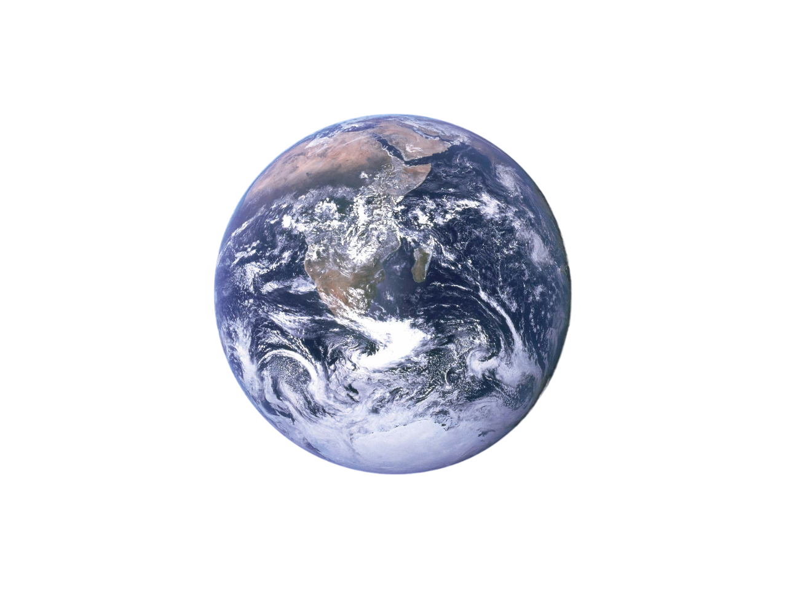

Latihan Cepat: Pilihan Ganda
1. Alat yang digunakan untuk mengukur suhu adalah...
Jawaban Anda benar! 🎉
Jawaban Anda salah. Coba lagi!
Soal Latihan

Latihan Tata Surya
Latihan tentang konsep, susunan, dan fenomena dalam sistem Tata Surya berdasarkan materi video interaktif.
10 Soal Pilihan Ganda
5 Soal Essay
Waktu: 30 menit
Contoh Soal Latihan:
1. Alat yang digunakan untuk mengukur suhu adalah...
Latihan interaktif akan segera tersedia dengan sistem scoring otomatis!